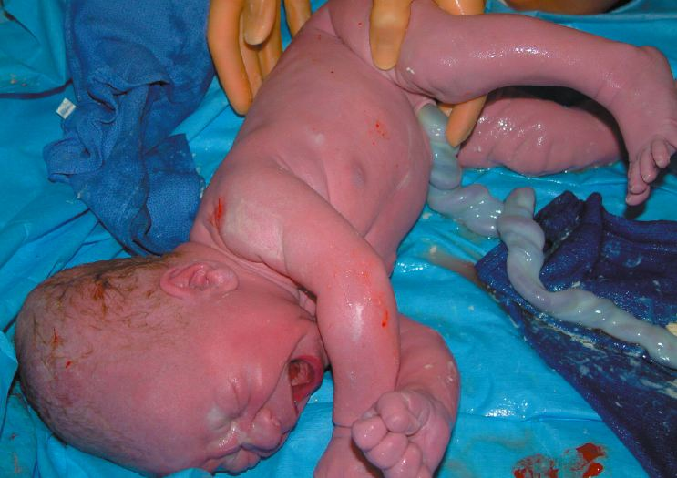

A Second Chance
Umbilical cord blood may save leukemia patients
Sophia Lim
Spring 2005

The utility of the placental/umbilical cord is truly underrated in the
public eye. Few consider the umbilical cord to be anything more than an
extension of the belly button. Yet, for children with hematopoietic
diseases, such as acute lymphocytic leukemia and acute myelogenous
leukemia, placental/umbilical cord blood is showing promise as a new
source of stem cells necessary for bone marrow transplantation,
providing numerous patients with a renewed hope for life.
For many, the placenta and umbilical cord have only
one purpose: they serve as the connection between a fetus and the
mother. Giving passage to the umbilical artery and veins, the umbilical
cord is the fetus’s lifeline as the only source of oxygenated blood and
nutrients. However, once a child is born, the umbilical cord is
ceremoniously snipped off, and along with the placenta, both are
discarded. Thanks to recent studies, however, the umbilical cord has
proven to be much more useful than it seems. In cord banks all over the
world, the umbilical cord is used to retrieve the blood remaining in
the placenta after a child is born. Usually, about three to four ounces
of placental/umbilical cord blood can be obtained, without any harm to
the child or mother, by inserting a needle through the umbilical vein.
The blood can then be cryopreserved (frozen) and accessed at a later
time. The most intriguing aspect of the pluripotent hematopoietic cells
in the blood is that they can develop into bone marrow cells if
transplanted. Just as the umbilical cord once provided life to the
unborn child, cryopreserved placental/umbilical cord blood now provides
another chance for life for those with acute stages of leukemia.
Leukemia is a cancer of the blood characterized by
an abnormal accumulation of the white blood cells known as leukocytes,
which are derived from bone marrow. An answer to leukemia’s claim on
life has been that of the bone marrow transplant. In practice for more
than 30 years, marrow transplants involve the destruction of a
patient’s diseased bone marrow and the infusion of healthy marrow into
the bloodstream. If successful, the cells will then engraft and produce
normal, healthy blood cells. The transplant is most successful when the
recipient and donor are human leukocyte antigen (HLA) identical sibling
matches. Unfortunately, more than two-thirds of patients awaiting
hematopoietic cell transplantation lack such a donor. As an
alternative, many receive unrelated donor transplants. These
transplantations are not a perfect match, which is crucial for the best
bone marrow transplant results. Often, the consequence of a mismatch is
severe graft-versus-host disease, in which the body rejects the
transplanted cells, leading to a high rate of mortality.
Mismatch is not the only limitation for bone marrow
transplants. Although more than seven million registered donors exist
in the United States alone, unrelated donors are not readily available
for all patients. Those who search for an unrelated donor may not
receive a marrow transplant for at least four months; in fact, about
two-thirds of those who seek bone marrow transplants never receive
them. Despite the increasing number of stem cell donors, only 30
percent of whites and a lower percentage of minority populations
receive a transplant due to health deterioration or death during the
search. This has led to a search for a more accessible transplant.
With studies starting in 1988, placental/umbilical
cord blood has emerged as an appealing source of hematopoietic stem
cells, especially for those in situations in which a matching,
unrelated donor cannot be found within a reasonable time. This is due,
in part, to the increased accessibility once a match is identified:
units can be obtained within about 13.5 days, as opposed to four
months. Moreover, cord blood is more desirable because of its high HLA
compatibility.